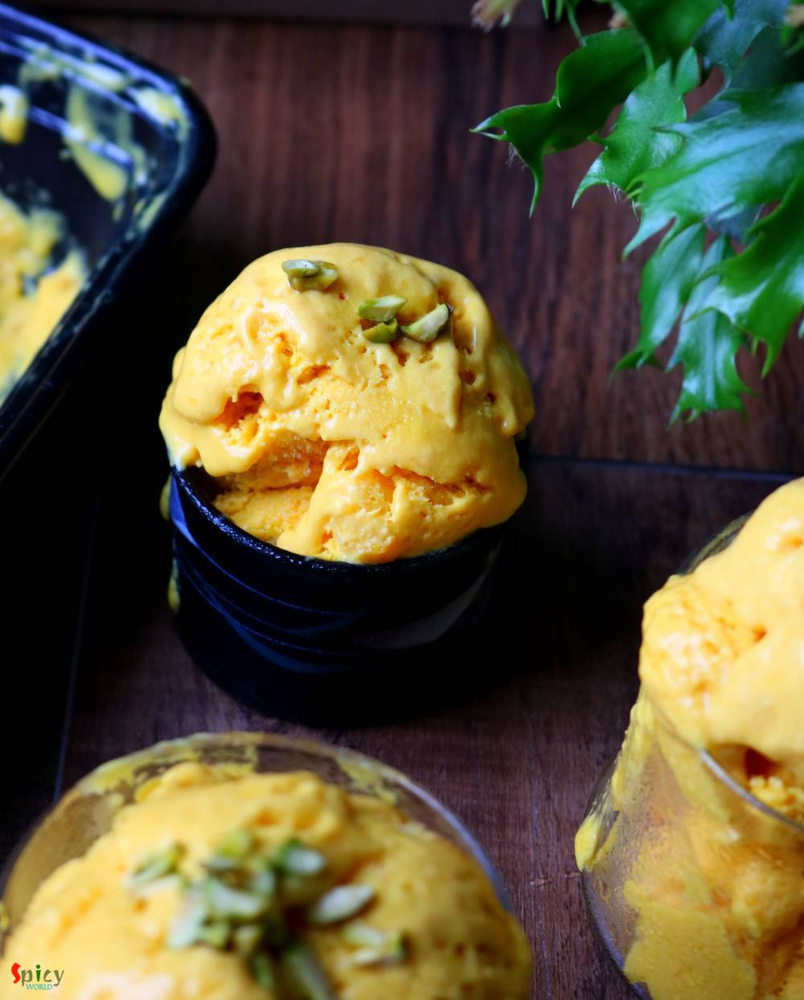

Simple and Easy Recipes
Mango Ice Cream
© 2016 Spicy World, Published on: Jun 27, 2019
Mango Ice Cream is a summer delight. Can you imagine Summer without ice creams and mangoes? It's almost impossible. This mango ice cream recipe is very easy and simple. With only three ingredients and without ice cream machine you create this delicious dessert. Do give it a try and let me know how it turned out for you.

Ingredients
- 1 cup of fresh heavy cream (full fat).
- Half of a tin of condensed milk.
- 2 cups of mango pulp. (puree)
- Pulp of 2 medium mangoes, finely chopped.
- Some chopped pistachios.


Steps
Put the bowl and blades of hand blender in freezer for 1 hour.
Take out them and pour the heavy cream in chilled bowl.
Blend with chilled blender for 3-4 minutes on high speed.
When the stiff peaks form, add mango pulp and condensed milk.
Before adding the mango pulp in cream strain it in a strainer, then it will be smooth and fiber free.
Blend again for 1-2 minutes.
Put the mixture in a container, cover it with foil or cling wrap.
Place the container in freezer for 3-4 hours.
Take it out, unwrap and prick the entire mixture with a fork.
This will make the ice cream more creamy. You can do this process in every 2-3 hours.
Finally put the container in freezer for 7-8 hours.
Then serve chilled with some chopped pistachios on top.
Your mango ice cream is ready to serve.
Serve this chilled ..
")